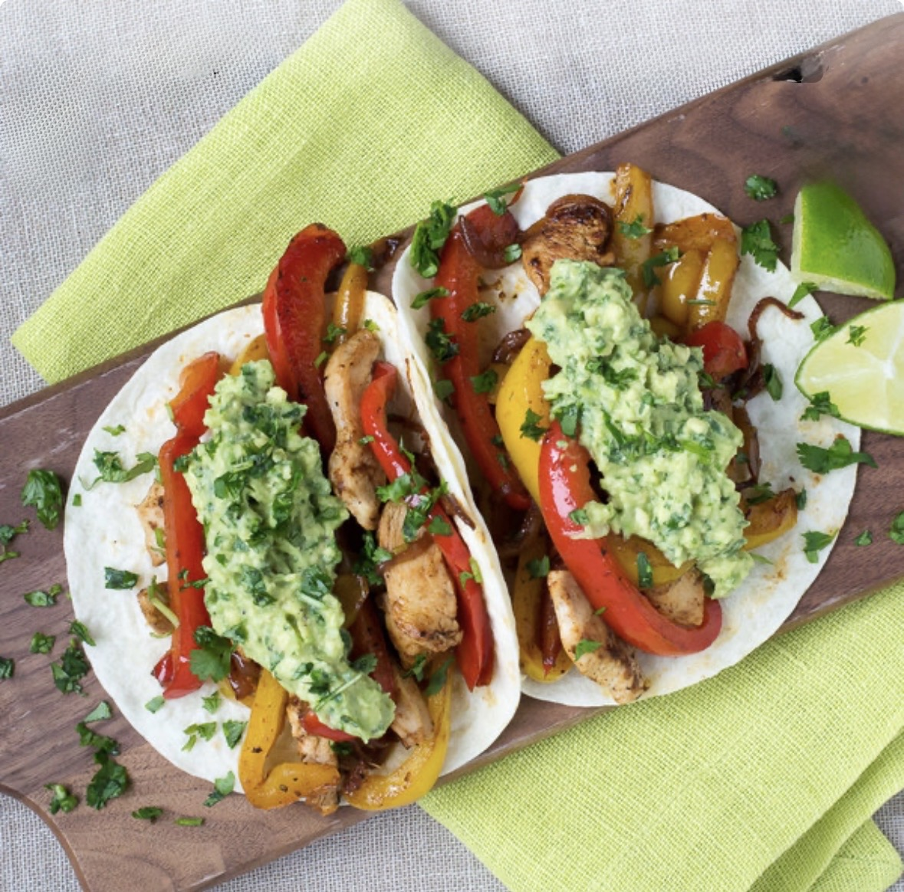

Ingredients
- 3 boneless skinless chicken breasts approximately 1 pound
- 1 medium onion
- 1 lime
- 3 bell peppers red, yellow, green or orange
- 3 tablespoons olive oil divided
- 1 teaspoon chili powder ¾ teaspoon salt divided, more to taste
- ½ teaspoon smoked paprika
- ½ teaspoon onion powder
- ½ teaspoon black pepper
- ½ teaspoon cumin optional
Instructions
- Cut onion into slivers & slice peppers.
- In a separate bowl, combine 1 tablespoon olive oil, juice of ½ lime, chili powder, paprika, onion powder, pepper, cumin and ½ teaspoon salt. Cut chicken into strips and toss with the spice mixture.
- Preheat 1 tablespoon olive oil over medium high. Add ½ of the chicken and cook until just cooked, about 3 to 5 minutes. Remove from the pan and set aside. Repeat with remaining chicken.
- Set chicken aside and add 1 tablespoon of oil to the pan. Drain onions well (if soaking per note below) and cook 2 minutes. Add in sliced peppers and season with remaining ¼ teaspoon of salt. Toss and cook for an additional 2 minutes or just until hot. Add chicken back to the pan and stir to combine.
- Squeeze additional lime overtop and serve over tortillas.